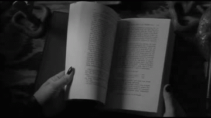

🤩 Mis hobbies & gustos 🌄
🌻 Comenzar un nuevo libro 🛡️
No puedo decir que la lectura siempre ha sido parte de mi vida, de hecho no me gustaba leer y las clases de castellano las odiaba, pero desde que encontré ese libro que me hizo olvidar cuánto tiempo llevaba viendo e imaginando cada párrafo no pude dejar de buscar una nueva historia a la cual aventurarme.
💜 Crear diseños 💡
Una de las cosas que más me gusta hacer y sigue siendo una de mis opciones a las que me gustarÃa dedicarme es el diseño gráfico, crear imágenes llamativas y no muy comunes que lleven un poco de historia personal.

Este es uno de los diseños que más me gustan puesto que mi color favorito es el morado y disfruté mucho el proceso de pasar un simlpe dibujo a algo como ésto.
En mis inicios de búsqueda de ideas sobre las que diseñar, encontré un tutorial en YouTube sobre como hacer un diseño parecido al de la serie de superheroes "Defenders" con un simple texto, asi que este fue el resultado.
🀠Hacer deporte ğŸ‹ğŸ»â€â™‚ï¸
El deporte siempre ha estado muy presente en mi vida, y aunque no empecé a hacer ejercicio en un gimnasio siempre traté de entrenar aunque fuera en mi casa, pero desde que empecé en el gimnasio me motivé aún más por avanzar; y aunque mi contextura es delgada no me ha limitado para romper mis barreras mentales, este es uno de esos motivos por los que me gusta tanto la sentadilla en barra libre, porque pude ver el gran progreso que tuve, un chico delgado que pesa poco levantando el doble de su peso y preparándose para más.